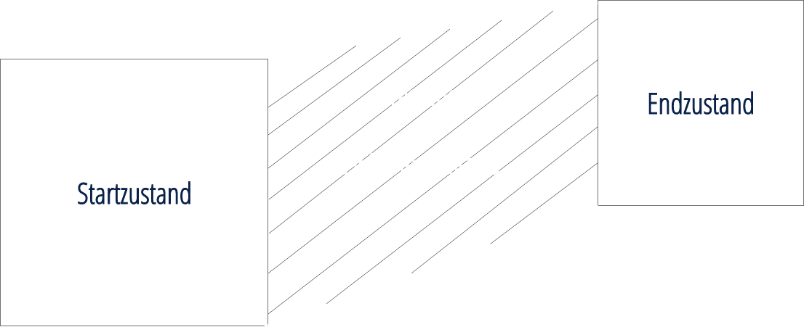

Definition
Transition = Übergang zwischen zwei Zuständen eines HTML-Elements
Mit Transition werden Werte von CSS-Eigenschaften (Properties) verändert.
transition-[was soll verändert werden]: [wie soll es verändert werden];
transition: [property][duration][timing-function][delay];
Durch CSS Transitions wird die User Experience grundlegend verbessert:
-
Aufmerksamkeit kann durch Bewegungen auf bestimmte Inhalte gezogen werden
-
Ein Weg der Kommunikation mit dem User (abhängig von der Art und Geschwindigkeit der Transition) / Feedback
-
Belebter und natürlicher Eindruck der Webseite
-
ohne Transition
ohne -
mit Transition
duration + easeduration + linear
Auslösende Events, die die Transition starten
[selector] { [Startzustand] }
[selector] : [Auslöser] { [Endzustand] }
-
:hover:focus
Besonderheiten bei Werten
initial: Werte werden auf Standardwert zurückgesetzt
inherit: Werte werden vom Elternelement übernommen
Nicht animierbare Elemente
Nicht alle Elemente sind mit Transitions animierbar. Alles, was keinen Verlauf an Werten hat, kann nicht animiert werden.
Prefers-reduced-motion
Erkennt, wenn ein Nutzer eingestellt hat, dass nicht notwendige Bewegungen minimiert werden sollen.